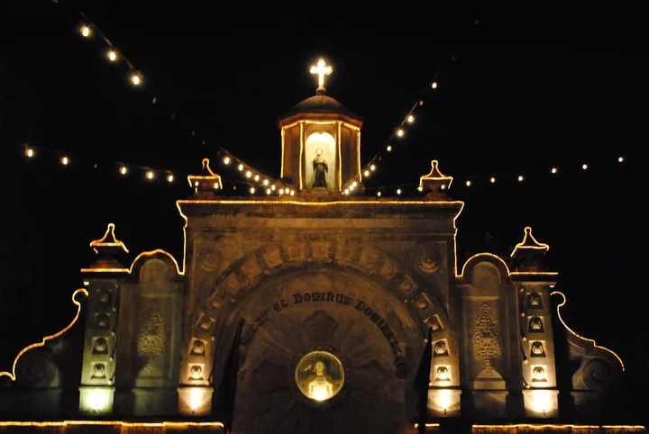
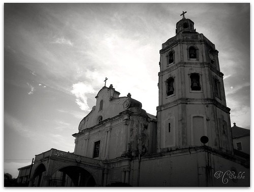
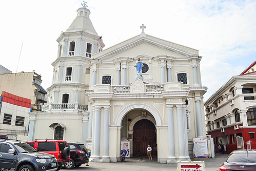
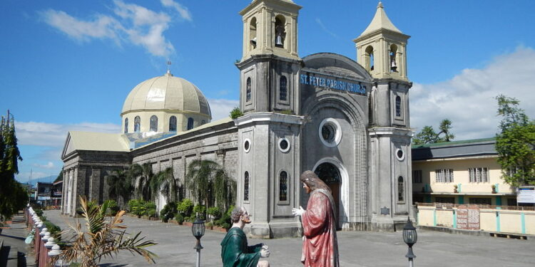
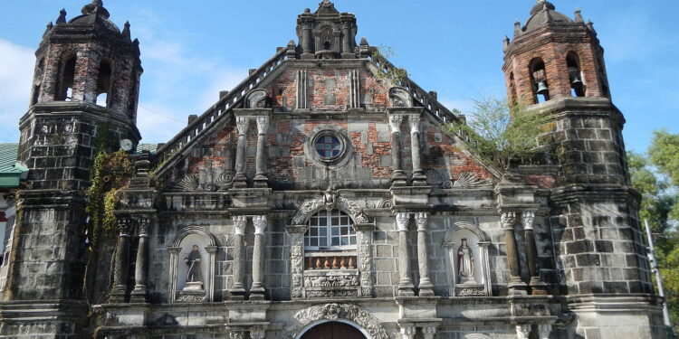

Spanish Colonial Heritage
Houses of Faith Standing Through Centuries
Pampanga's churches are among the oldest in the Philippines, built by Spanish missionaries during the colonial era. Many survived earthquakes, wars, and even volcanic eruptions — testaments to both spiritual devotion and architectural endurance.
 Angeles City
Angeles City
Holy Rosary Parish
The patron church of Angeles City, originally built in 1877. Its stunning Baroque facade and ornate interior make it one of the most beautiful churches in Central Luzon.
Learn More →
BacolorSaint Guillermo Parish (Bacolor)
Famously half-buried by lahar from the 1991 Mount Pinatubo eruption, this church is now an iconic image of Pampanga's resilience and one of the country's most photographed heritage sites.

GuaguaSaint James the Apostle (Betis)
Considered one of the most beautiful baroque churches in the Philippines, this Guagua gem dates to the 17th century and features a stunning gilded interior.

San FernandoMetropolitan Cathedral of San Fernando
The grandest church in the provincial capital — the center of faith for San Fernando and host to major religious celebrations throughout the year.

ApalitSaint Peter & Paul Parish (Apalit)
Home of the famous Apung Iru Fluvial Procession every June, this church on the banks of the Pampanga River is a center of unique Kapampangan Catholic tradition.

MinalinOur Lady of the Assumption (Minalin)
A well-preserved colonial church in Minalin known for its beautiful architectural details and strong sense of community faith.